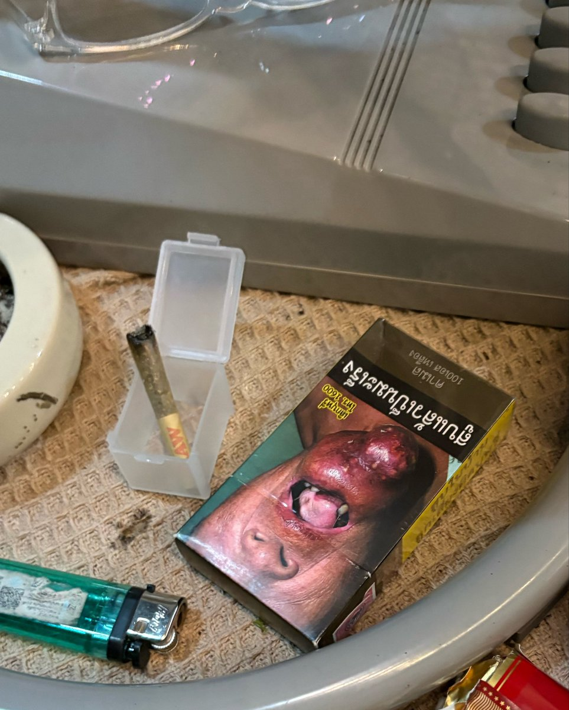
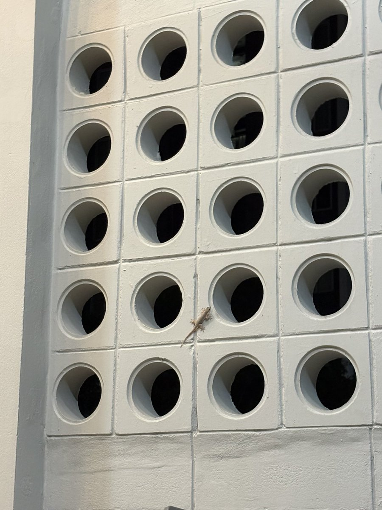
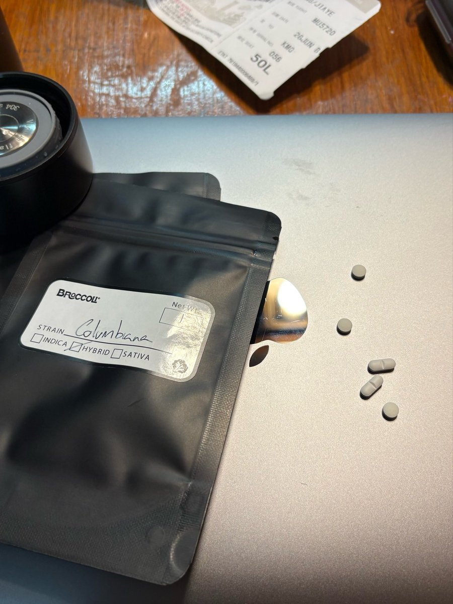

Lotus
@Lotus_LianHua04
@Jy666992 我总是在花坛或者深水埗那边的餐厅后门垃圾桶看到有人抽大麻，有穿得像理工男的有穿普通印花T恤的甚至有戴小帽子的中东人。。搞得我现在一想到什么人都有可能吸过大麻就莫名其妙很想笑



烨篮子
@Jy666992
第一次在店里吸大麻
在这之前我都觉得精神状态不好是一种很私人的事 只能和志同道合 也叫所谓的同圈人交流
后来我发现420真的是一个群体……
在大麻店想跟店长闲聊等到下劲点再决定去不去……（太尴尬了） https://t.co/SJ0NKKz0UG